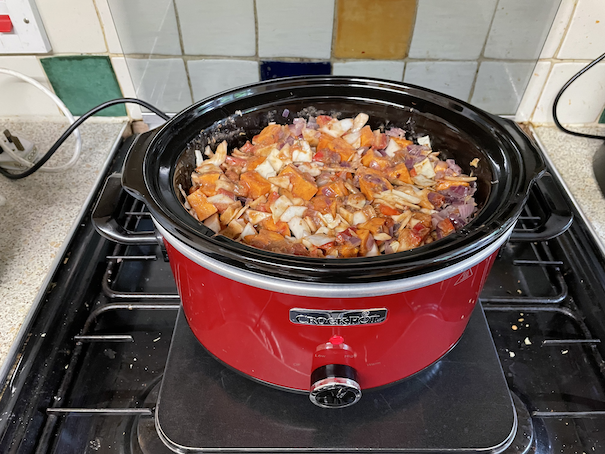

Sweet potato curry
- Heat for 5 mins
- 2 red onions
- thumb piece of ginger chopped
- Add
- 200g coconut milk
- tin of tomatoes
- 2 tbsp curry powder
- 1 tbsp thyme
- 1 tsp allspice
- ¼ tsp chilli flakes [less better]
- vegetable stock cube
- Add and simmer for 20-25 mins until veg is tender
- 3 large sweet potatoes cut into large cubes [weigh, more better]
- 2 red peppers
- 325g white cabbage chopped [weigh, is half?]
Serving
Notes
- chilli flakes reduced from 1 tsp, maybe ¼ tsp too much
- slow cooked for 4 hours, spices take long to cook
